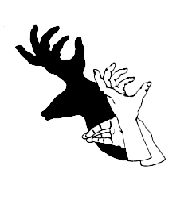

Instrucciones para hacer sombras chinescas
La computadora tenía problemas y cometió algunos errores.
Controla que hayas cumplido con:
- Separar las palabras que aparecen juntas,
- Colocar las mayúsculas al comienzo de los enunciados y de los nombres propios,
- Colocar los signos de puntuación.
Apaga todas las luces de la habitación y enciende una lámpara. Colócala para que ilumine una pared desnuda.
Ubica tus manos a 1 metro de la luz y a 1 metro y medio de la pared, aproximadamente.
Cuanto más cerca estés de la luz, más grandes serán las sombras.
Recuerda utilizar los brazos desnudos y practicar hasta lograrlo.
Escribe aquí el texto corregido.